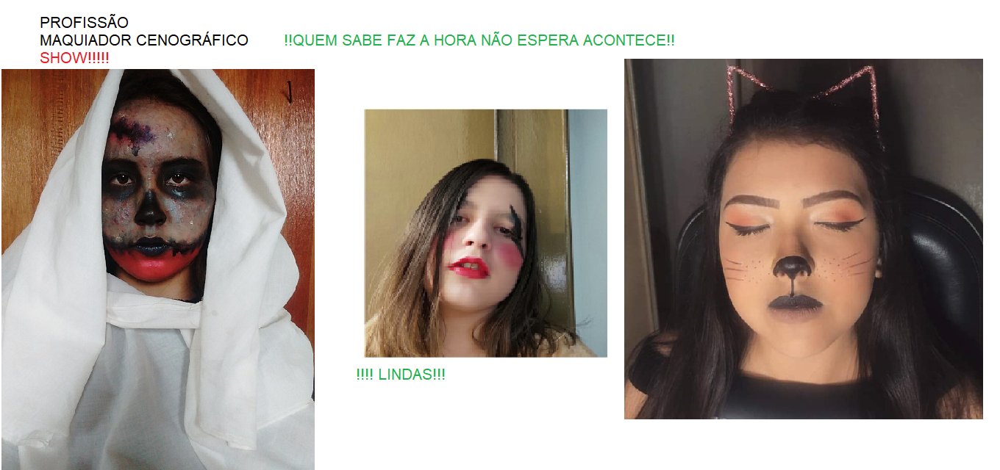

Meu colégio
Colégio Estadual Pres. Costa e Silva - Braganey
Projeto: Mostrar as atividades realizadas pelos alunos
O objetivo do projeto é incentivar a criatividade e conhecer a diversidade cultural.
Maria José Rolim Vieira
Sao peraltas:
suas alegrias são intensas;
suas tristezas, absolutas.
são repletos de esperanças.
são dignos de esperança.
são queridos
às vezes odiados mas muitas vezes.
amados
médio não os satisfaz, ,
metades nunca foram suficiente!
Todos os grandes e pequenos momentos,
feitos com amor e com carinho,
ou são explosivos ao extremo.
Palavras até os conquistam temporariamente…
gostam de ser o que são.
vão mudando aos pouquinhos com muita instrução
não é uma questão de inteligência
e sim de muita mediação,
são seres humanos
vivenciando emoções

Eu possa me dizer do amor (que tive):
Que não seja imortal, posto que é chama
Mas que seja infinito enquanto dure